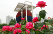
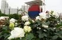
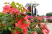

장미광장소개
도심 속 꽃향기가 만발한 올림픽공원이 되기 위하여 장미광장은 2010년 6월 개장하였습니다. 올림픽공원 내 K-아트홀과 올림픽홀 사이에 위치하며 13,260㎡의 넓은 면적을 가지고 있습니다. 그리고, 현재 165종 18,500주의 장미가 식재 되어 꽃피우고 있습니다.
장미광장은 고대올림픽과 근대올림픽의 만남을 주제로 제우스를 비롯한 ‘올림푸스 12신의 정원'이라는 컨셉으로 조성되었으며, 화단은 12개로 나누고 올림푸스 산에 사는 열두 신의 이름을 따서 만들었습니다.
장미꽃은 그리스신화와 밀접한 관계를 맺고 있습니다. 그리스 신화를 보면 장미꽃을 처음 만든 여신이 바로 미의 여신 아프로디테입니다. 그래서 장미는 아름다움을 창조하려고 만든 꽃입니다. 장미광장에서 5월, 10월 두 번의 향기로 가득한 장미축제가 열립니다. 모든 시민들이 참여할 수 있는 장미와 관련된 다양한 프로그램과 이벤트를 운영할 예정입니다
장미란?
장미꽃은 원을 그리면서 겹겹이 둘러싸여 생겨나는 꽃봉오리, 아름다움을 지키려고 날을 세운가시, 그리고 진한 색깔과 향기로 꽃중의 꽃, 꽃의 여왕이라고 불립니다. 장미 원산지는 서남아시아이며, 야생종이 약 200여종, 개량종이 약1만 5,000여종이 있습니다. 올림픽공원 장미광장의 장미는 5개의 계통으로 분류되며, 165종 18,500주의 장미가 식재되어 있습니다.
| 대표이미지 | 계통 | 특성 | 대표장미 |
|---|---|---|---|
|  | HT (Hybrid Tea Roses) |
사철 피는 큰송이 장미군, 우리가 보통 장미라고 하는 크고 탐스러운 장미로서 관리가 가장 많이 요구되는 품종 | 탄초, 마노우 메이앙, 레이시 레이디, 블랙바카라, 파운틴 스퀘어, 블루라이트, 바닐라 퍼퓸 등 |
|  | AT (Antique Touch Roses) |
사철피는 큰 송이 고전형 장미군, 최근 세계적으로 유행. 향기가 좋고 겹이 많으며 르네상스시대의 장미를 현대적감각에 맞게 개량한 품종. 꽃중심이 겹이 많고 다초점의 둥근 로제트화형을 이룸 | 아프로디테, 톹루즈 로즈텍, 로얄 프린세스, 쁘띠 트리아농, 캔들라이트, 차이코프스키 등 |
 |
FL (Floribunda Roses) |
사철피는 중간송이, 다화성 장미군, 북유럽에서 장미의 주종으로 분류되는 대규모 장미공원의 필수 품종 HT, AT계 보다 꽃은 작으나 다화성으로 끊이지 않게 연속 개화하는 품종 | 아이스버그, 잉그릿 바이불, 핫파이어, 람피온, 퓨어 포이트리, 코토네, 와라베우타, 쿰바야 등 |
|  | LA (Landscape Roses) |
최근에 광활한 공간의 컬러 조경을 위해 개발된 조경용 장미, 사철피는 덤불형 조경용 장미로 내병,내한성이 뛰어나 관리가 적은 다화성 품종 | 워터멜론아이스, 크리스탈훼어리, 핑크메이딜란드, 미라토, 사티나, 골든보더, 시에스타 등 |
| CL (Climbing Roses) |
키가 2-3m 자라는 덩굴성 장미품종. 높은 담장, 트랠리스, 아치 등에 부착 유인하여 보는 꽃 | 칵테일, 레드에덴, 아톨'99, 오렌지메이안디나, 심파시, 라위니아, 테라코타, 드림위버 등 |